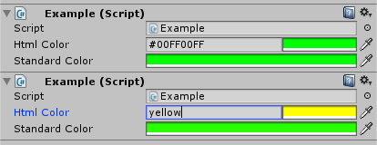

| htmlString | 要转换为颜色的不区分大小写的 html 字符串。 |
| color | 转换的颜色。 |
bool 如果成功转换字符串，则为 true，否则为 false。
尝试转换 html 颜色字符串。
以“#”开头的字符串将通过以下方式解析为十六进制：
#RGB（变成 RRGGBB）
#RRGGBB
#RGBA（变成 RRGGBBAA）
#RRGGBBAA
如果不指定，alpha 将默认为 FF。
\
不以“#”开头的字符串将解析为文本颜色，并且支持以下颜色：\
红色、青色、蓝色、深蓝色、浅蓝色、紫色、黄色、绿黄色、紫红色、白色、银色、灰色、黑色、橙色、棕色、栗色、绿色、橄榄色、藏青色、蓝绿色、浅绿色、洋红色。\
\
以下示例创建一个自定义 PropertyDrawer，供用户输入 html 颜色。当颜色属性具有特性 ColorHtmlProperty 时，可在检视面板中显示此属性绘制器。
\
我们的自定义属性绘制器。
// This is not an editor script. using UnityEngine;
public class ColorHtmlPropertyAttribute : PropertyAttribute { }
// This is an editor script and should be placed in an 'Editor' directory. using UnityEngine; using UnityEditor;
[CustomPropertyDrawer(typeof(ColorHtmlPropertyAttribute))] public class ColorHtmlPropertyDrawer : PropertyDrawer { public override void OnGUI(Rect position, SerializedProperty property, GUIContent label) { Rect htmlField = new Rect(position.x, position.y, position.width - 100, position.height); Rect colorField = new Rect(position.x + htmlField.width, position.y, position.width - htmlField.width, position.height);
string htmlValue = EditorGUI.TextField(htmlField, label, "#" + ColorUtility.ToHtmlStringRGBA(property.colorValue));
Color newCol; if (ColorUtility.TryParseHtmlString(htmlValue, out newCol)) property.colorValue = newCol;
property.colorValue = EditorGUI.ColorField(colorField, property.colorValue); } }
// This shows how we would use the PropertyDrawer. using UnityEngine;
public class Example : MonoBehaviour { [ColorHtmlProperty] public Color htmlColor = Color.green;
public Color standardColor = Color.green; }